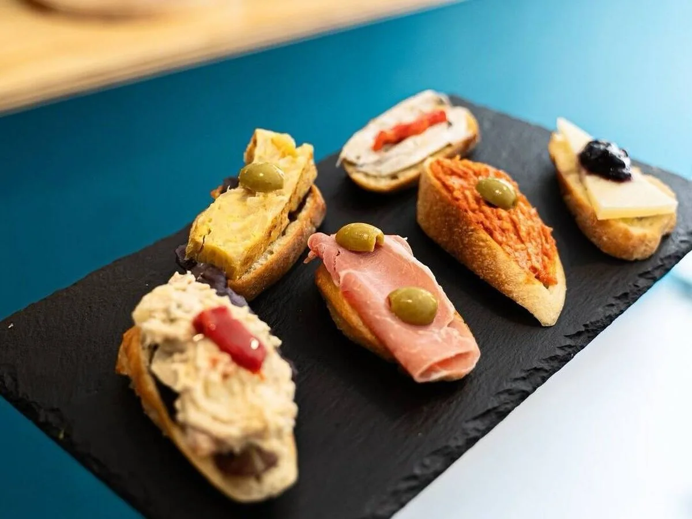
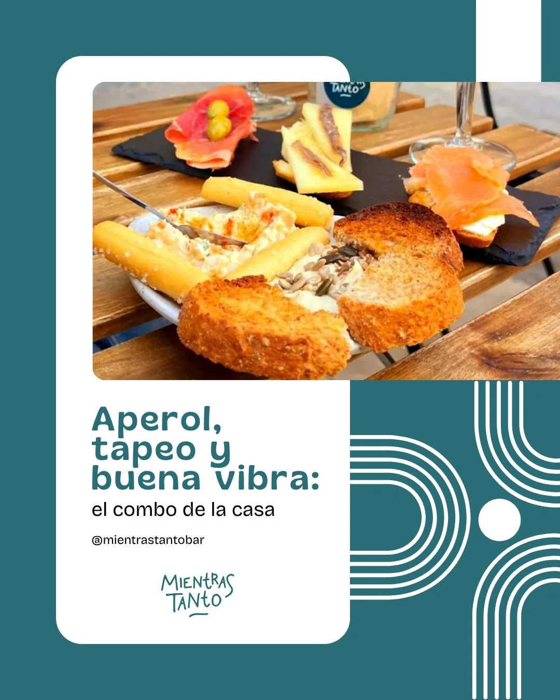
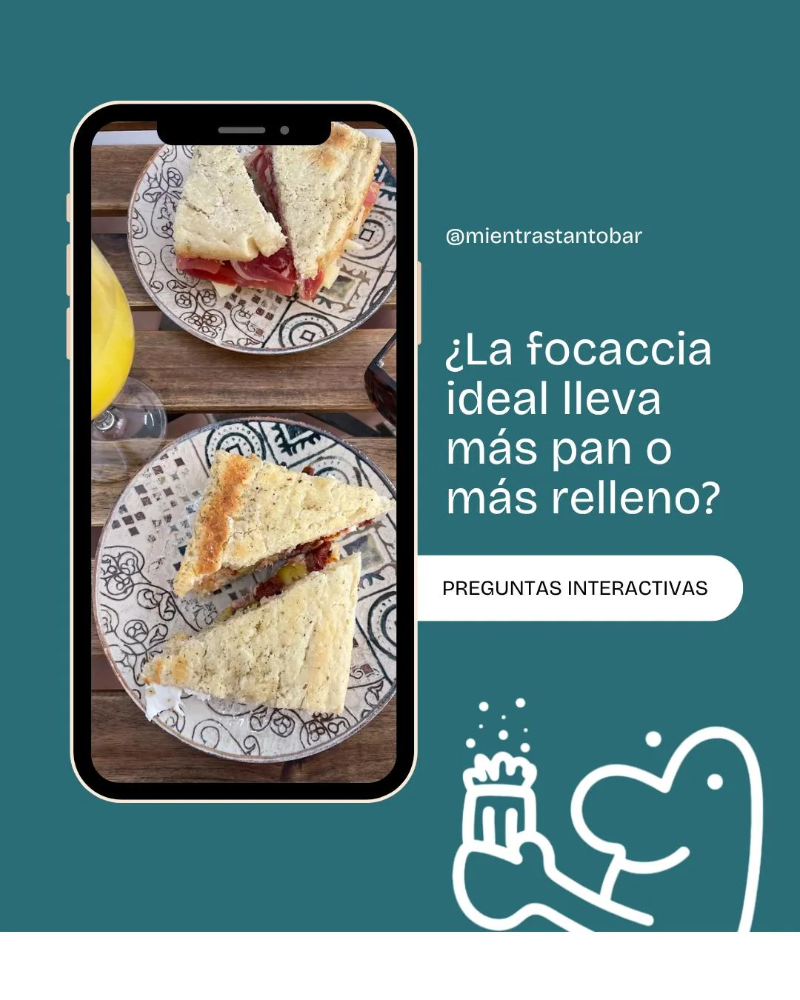
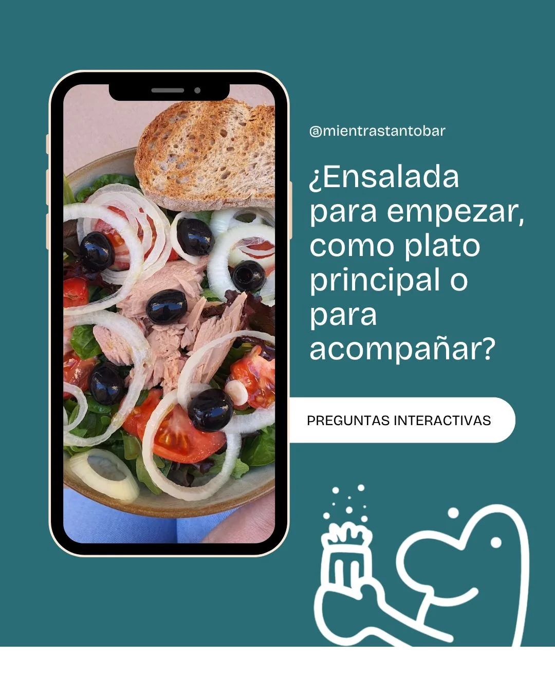
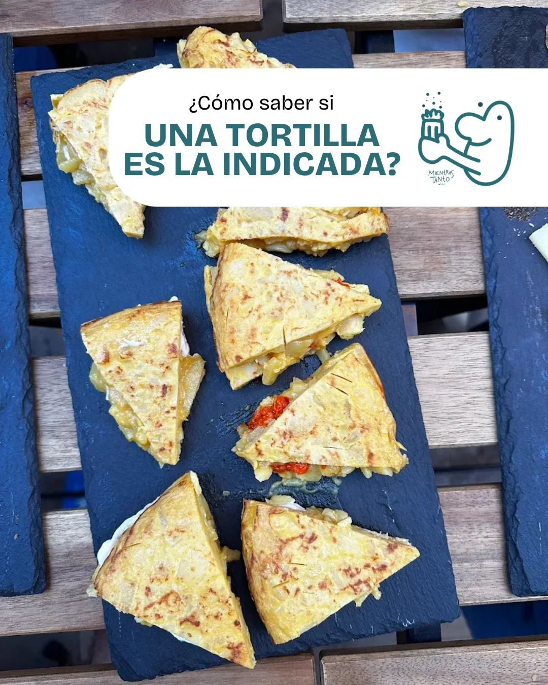

Tapas para compartir
Tortillas, tostadas, gildas y hummus forman parte de los contenidos publicados por el establecimiento.
Ciutat Vella, València
Tapas, focaccias y algo para brindar. Una pausa en la calle dels Cordellats, en el centro de Valencia.

Un lugar con identidad
Mientras Tanto es un restobar de Ciutat Vella. Su propuesta reúne tapas, focaccias, ensaladas y bebidas para acompañar un encuentro en el centro de Valencia.
La carta se consulta en el Linktree del local. Instagram sirve para descubrir sus novedades: la bio indica que las reservas no se gestionan por ese canal.
Los canales del local ↗A tu manera
Restobar · Tapas · Drinks. Ciutat Vella, València.
Tortillas, tostadas, gildas y hummus forman parte de los contenidos publicados por el establecimiento.
Focaccias y ensaladas para combinar a tu manera. Consulta la carta enlazada para las opciones actuales.
Vermut, vino, spritz y otras bebidas acompañan el tardeo del local. Confirma disponibilidad y alérgenos al pedir.
Una mirada al lugar
Foto atribuida al local por El Confidencial e imágenes originales de su perfil Instagram. Los diseños del perfil se conservan completos.




Todo a mano
Consulta la información publicada por el establecimiento en sus canales.
Nos vemos aquí
Consulta la carta y llama al establecimiento para organizar tu visita.
Llamar al localLunes a sábado · 12:00–20:00. Horario publicado en su bio de Instagram; confirma festivos con el local.